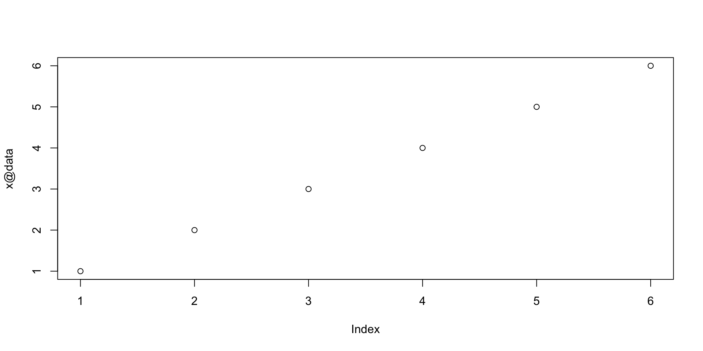

程式設計與應用
第十章：物件導向程式設計
實踐大學
2026-06-08
兩套物件系統
支援 OOP 的函數式語言
R 骨子裡是函數式語言——寫函數式程式完全是好做法。但 R 也支援物件導向程式設計（OOP）：Java、C#、Ruby、C++ 的主流範式。許多 R 套件以 R 物件打造，包括核心的 stats、lattice 與 ggplot2。OOP 在表示複雜事物（統計模型、圖表）時特別好用。
R 有兩套機制並存，皆承自 S：
- S3（約 1990）：用 class 屬性實現單引數方法。經典建模軟體用 S3，所以它無所不在。
- S4：正式的類別與方法——多重分派、抽象型別、精緻的繼承。許多較新套件採用，Bioconductor 用得尤其多。
書中建議：新的抽象用 S4 打造；S3 也得學，因為你必須閱讀並擴充大量使用它的既有程式碼。
以時間序列認識關鍵概念
時間序列——等距時間間隔的測量值，有起點、終點、頻率——讓每個 OOP 概念都變具體：
- 類別（class）是正式定義；每個實際的時間序列是一個實例（instance）；操作該類別的函式是方法（method）；
- 把儲存細節（資料框？向量？文字？）藏在方法之後，叫封裝（encapsulation）；
- 體重紀錄類別重用時間序列的機制、只增添不同之處，這展示了繼承（inheritance）——時間序列是父類別、體重紀錄是子類別；
- 同一個名字（
period）對不同類別各自做對的事，叫多型（polymorphism）； - 由多個成分類別組成新類別叫組合（composition）——繼承一個以上的類別叫多重繼承，R 是允許的。
（沒錯，R 早有時間序列類別——stats 裡的 S3 類別 ts。這是故意的：我們先用 S4 重蓋一遍，再解剖 S3 原版。）
S4 實作範例
setClass：定義 TimeSeries
槽位（slot）是物件存放資訊的地方。我們用三個槽位表示時間序列——資料、起始時間、結束時間（單位、頻率、週期都能推導）：
representation 說明每個槽位所裝物件的類別。
new：建立實例
new 是通用建構子：第一個引數是類別名，其餘填入槽位。S4 預設的列印方法逐一顯示槽位：
An object of class "TimeSeries"
Slot "data":
[1] 1 2 3 4 5 6
Slot "start":
[1] "2009-07-01 GMT"
Slot "end":
[1] "2009-07-01 00:05:00 GMT"setValidity：拒絕壞物件
不是所有槽位值都合理：end 不能早於 start，兩者長度都得是 1。用 setValidity 註冊驗證函式、用 validObject 檢查：
Class "TimeSeries" [in ".GlobalEnv"]
Slots:
Name: data start end
Class: numeric POSIXct POSIXct[1] TRUE（也可以在 setClass 時就指定驗證函式——見其完整定義。）
驗證的實際效果
從此 new 會檢查每個候選物件、拒絕不合格者：
good.TimeSeries <- new("TimeSeries",
data=c(7, 8, 9, 10, 11, 12),
start=as.POSIXct("07/01/2009 0:06:00", tz="GMT",
format="%m/%d/%Y %H:%M:%S"),
end=as.POSIXct("07/01/2009 0:11:00", tz="GMT",
format="%m/%d/%Y %H:%M:%S"))
bad.TimeSeries <- new("TimeSeries",
data=c(7, 8, 9, 10, 11, 12),
start=as.POSIXct("07/01/2009 0:06:00", tz="GMT",
format="%m/%d/%Y %H:%M:%S"),
end=as.POSIXct("07/01/1999 0:11:00", tz="GMT",
format="%m/%d/%Y %H:%M:%S")) # 還沒開始就結束了！Error in `validObject()`:
! invalid class "TimeSeries" object: FALSE第一個方法：period
從槽位計算週期的普通函式：
@ 運算子直探槽位——那是實作者的視角。使用者該得到更友善的動詞；泛型函式登場。
setGeneric：series
想從任何合適的物件抽出資料序列——多型——先定義函式、再升格為泛型；舊的函式主體成為預設方法：
[1] "series"[1] 1 2 3 4 5 6Function: series (package .GlobalEnv)
object="ANY"
object="TimeSeries"
(inherited from: object="ANY")（OOP 術語稱此為函式的多載（overloading）。）
setMethod：替 TimeSeries 註冊 period
建立泛型 period，再把 period.TimeSeries 註冊為 TimeSeries 簽名的方法：
[1] "period"Time difference of 1 mins呼叫泛型，R 依類別分派到正確的定義。
為既有泛型寫方法——連運算子也行
你可以替既存的泛型（如 summary）掛上方法——甚至運算子：
[1] "2009-07-01 to 2009-07-01 00:05:00"
[1] "1,2,3,4,5,6"[1] 3Note
這招只對部分內建函式有效——print 就不能這樣重定義。可重定義的泛型清單見 ?S4groupGeneric；原因在後面的 S3 一節說明。
繼承：WeightHistory
體重紀錄＝時間序列＋姓名與身高。contains 宣告父類別；新類別只加自己的額外槽位：
setClass("WeightHistory",
representation(height = "numeric", name = "character"),
contains = "TimeSeries")
john.doe <- new("WeightHistory",
data=c(170, 169, 171, 168, 170, 169),
start=as.POSIXct("02/14/2009 0:00:00", tz="GMT",
format="%m/%d/%Y %H:%M:%S"),
end=as.POSIXct("03/28/2009 0:00:00", tz="GMT",
format="%m/%d/%Y %H:%M:%S"),
height=72, name="John Doe")R 會自動驗證內嵌的 TimeSeries（你可以自己試試塞個壞的）。
多重繼承：Person ＋ TimeSeries
更乾淨的組合：先定義 Person 類別，再同時繼承兩者：
行為一模一樣、設計略勝一籌——而且 AltWeightHistory 同時繼承兩個父類別的方法。
虛擬類別：setClassUnion
加一個 Cat 類別——貓也有名字。想寫一個同時涵蓋人與貓的 is.fluffy 方法，就用 setClassUnion 在兩者之上建立虛擬類別：
方法可以鎖定 NamedThing；但不能從它建立物件（表示法有歧義）。若在子類別（如 Person）另外定義 is.fluffy，會覆寫父類別的版本。附帶好處——類別成員資格可以檢驗：
[1] TRUE[1] TRUE深入 S4
setClass 完整簽名
| 引數 | 說明 |
|---|---|
Class |
新類別的名稱（唯一必填） |
representation |
槽位及其類別的具名串列（"ANY" 表示什麼都能放） |
prototype |
槽位預設值的物件 |
contains |
此類別擴充的父類別名稱 |
validity |
驗證函式（預設不檢查；可用 setValidity 補設） |
where |
存放定義的環境（預設：呼叫 setClass 之處） |
sealed |
是否禁止再以同名 setClass 重定義 |
package |
類別所屬套件名 |
S3methods |
是否允許為此類別寫 S3 方法（預設 FALSE） |
access、version |
不使用；S-PLUS 相容性保留 |
methods 套件的 representation() 與 prototype() 輔助函式，在「擴充基本型別」「多個父類別」「兩者混合」時特別好用。
槽位規則、.Data 與其他
- 禁用的槽位名——保留給屬性：
class、comment、dim、dimnames、names、row.names、tsp。（物件可以同時擁有槽位與屬性。） - 擴充基本型別（本章稍後的表）會得到一個存放基本部分的
.Data槽位——針對內建型別寫的程式碼照常運作，作用在.Data上。 setIs(class1, class2, ...)明確宣告繼承關係——contains之外的另一條路。- 建立物件時，R 會執行類別的
initialize方法（若有定義）——通常用來計算衍生槽位。 setClassUnion(name, members, where)建立前面看過的虛擬父類別。
建立物件與槽位存取
new(c, ...)——建構子：具名引數填槽位；之後執行initialize方法（若有）。- 讀槽位：
object@slotname，或等價的slot(object, "slotname")。 - 寫槽位用普通指派，預設會驗證：
物件操作與轉型
物件檢視詞彙：
is(o, c)——物件o屬於類別c嗎？extends(c1, c2)——類別c1擴充c2嗎？slotNames(o)／slotNames(c)——物件／類別的槽位名；getSlots(c)——各槽位的類別（有點反直覺）。
轉換：as(o, c) 把物件 o 轉成類別 c。自己的類別要用 setAs 註冊轉型方法：
| 引數 | 說明 |
|---|---|
from、to |
輸入與輸出的類別名 |
def |
執行轉換的函式 |
replace |
替換形式用的函式（as 被指派時） |
where |
存放定義的環境 |
setGeneric 與 setMethod 完整簽名
setGeneric(name, def=, group=list(), valueClass=character(), where=, package=, signature=, useAsDefault=, ...)——重點引數：
name／def——名稱與（可選的）定義函式；group——群組泛型（見?S4groupGeneric）；valueClass——回傳值必須隸屬的類別；signature——形式引數名與類別（"ANY"表示不限）；useAsDefault——指定哪個函式當預設方法。
setMethod(f, signature=character(), definition, where=, valueClass=NULL, sealed=FALSE)：
f——泛型（或其名稱）；signature——要比對的引數類別；definition——被呼叫的函式；sealed——禁止重定義。
管理泛型與方法
methods 套件的記帳函式：
| 函式 | 說明 |
|---|---|
isGeneric／isGroup |
是否存在此名稱的泛型／群組泛型 |
removeGeneric／removeMethods |
移除泛型連同方法／只移除方法 |
getMethod、selectMethod |
取得某函式＋簽名的方法 |
existsMethod、hasMethod |
該方法存在嗎？ |
findMethod |
哪些套件含有此方法？ |
showMethods |
顯示 S4 泛型的所有方法 |
dumpMethod／dumpMethods |
傾印一個／全部方法為程式碼 |
findFunction |
函式定義在搜尋路徑的哪裡 |
更多協助：library(help="methods")。
基本類別
內建型別的類別——一切類別都建立在這些之上，而且你可以為它們寫方法：
| 分類 | 物件型別 | 類別 |
|---|---|---|
| 向量 | integer／double／complex／character／logical／raw |
integer／numeric／complex／character／logical／raw |
| 複合 | list／pairlist／environment |
list／pairlist／environment |
| 特殊 | NULL |
NULL |
| 語言 | symbol／language／expression |
name／call／expression |
| 函式 | closure／special／builtin |
function |
| 其他 | externalptr |
externalptr |
六個向量類別都擴充虛擬類別 vector。
老派 OOP：S3
S3 類別不過是屬性
S3 物件＝基本物件＋額外屬性，其中一個叫 class。沒有正式定義；屬性（包括 class）可以徒手改。（S3 很像 JavaScript 這類原型語言。）解剖內建的 ts 類別：
Feb Mar Apr May Jun
2009 1 2 3 4 5$tsp
[1] 2009.083 2009.417 12.000
$class
[1] "ts"[1] "double"[1] 1 2 3 4 5
attr(,"tsp")
[1] 2009.083 2009.417 12.000ts 就是一條 double 向量，外加 class 與 tsp 兩個屬性。S4 的工具在這裡不適用：
S3 的繼承是非正式的——class 屬性若有多個元素，第一個是物件的類別、其餘是「繼承」的類別，使繼承成了物件的性質、而非類別的。封裝不受語言強制；參數化多型也付之闕如。不過簡單多型行得通——靠 S3 泛型。
S3 方法：命名慣例＋ UseMethod
S3 泛型靠命名慣例分派，不靠註冊：
- 取個泛型名，例如
gname； - 定義
gname，主體為UseMethod("gname")； - 對每個目標類別，定義
gname.classname，第一個引數是該類別的物件。
來看真品：
UseMethod 沿著物件的 class 向量找 plot.class；全部落空就找 plot.default。（NextMethod 可在方法內呼叫，交棒給下一個可用的方法。）
替我們的 S4 類別加 S3 方法
替 TimeSeries 加 plot 方法，只需把函式取對名字：

plot(my.TimeSeries) 默默變成 plot.TimeSeries(my.TimeSeries)。
S4 裡用 S3：setOldClass
S4 槽位不能直接放 S3 類別——得先用 setOldClass(Classes, prototype, where, test=FALSE, S4Class) 包裝：
Classes——舊式類別的名稱；prototype——S4 類別的預設物件；test——可能多重繼承時設TRUE；S4Class——作為基礎的 S4 類別定義。
找出被藏起來的 S3 方法
套件作者可能隱藏個別方法，逼你使用泛型——用隱蔽實現封裝：
[1] histogram.data.frame* histogram.factor* histogram.formula*
[4] histogram.numeric*
see '?methods' for accessing help and source codeError in `histogram.factor()`:
! could not find function "histogram.factor"無論如何想讀隱藏的程式碼：
Tip
現代註腳。 今日的生態系又添了幾套系統——可變參照物件的 R6，以及計畫統一 S3/S4 的接班人 S7。你剛學的概念（類別、方法、分派、繼承）全部直接通用。
版權聲明
版權。 本講義改編自 Joseph Adler 著、O’Reilly Media 出版之 R in a Nutshell: A Desktop Quick Reference（第二版）。原著作者與出版社保留一切權利。
僅限非商業用途。 本教材僅供教學使用，不得用於商業營利。
標示出處。 任何重製、散布或使用本教材，皆須妥善標註原始出處。

R in a Nutshell: A Desktop Quick Reference